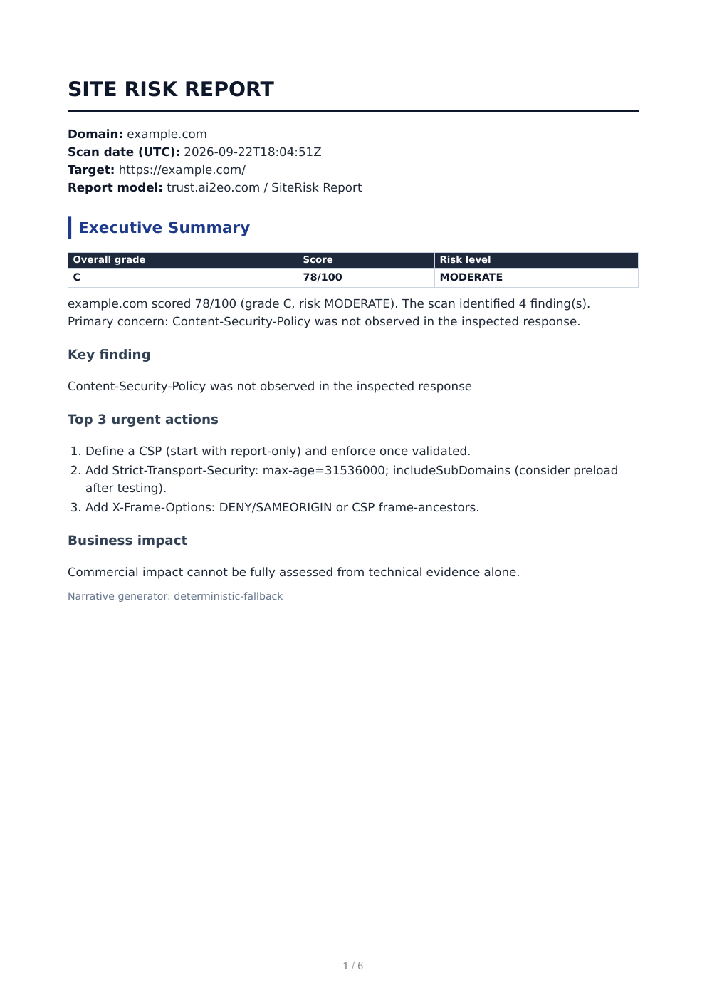
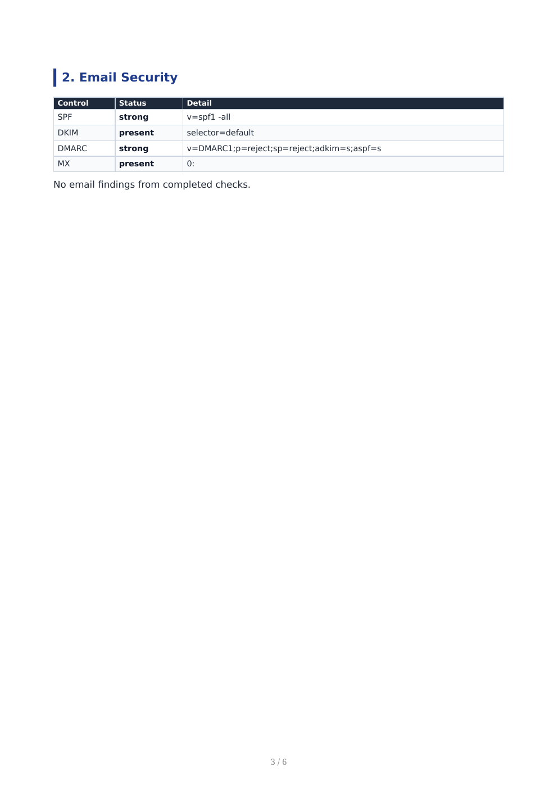

HTTP and redirect behaviour
Status, final URL, redirect chain, reachability and basic response metadata.
Website risk report / UK small business
A focused, evidence-backed PDF report for UK small businesses. One domain, clear findings, practical next steps.
Point-in-time technical assessment. Human review recommended before delivery.

01 / Scope
Small configuration gaps are easy to miss when a website still loads. The report separates completed checks from unavailable sources so the result stays useful and honest.
Status, final URL, redirect chain, reachability and basic response metadata.
HSTS, CSP, X-Content-Type-Options, Referrer-Policy, Permissions-Policy and X-Frame-Options.
SPF, DKIM, DMARC and MX records, with explicit unknown or unavailable states.
Direct certificate checks, SSL Labs when it completes, AlienVault OTX and urlscan.io.
Enter a domain for a live DMARC DNS check in your browser. The paid report adds HTTP headers, TLS, SPF/DKIM and more.
Without DMARC, spoofed mail from the domain can reach inboxes with no reporting or enforcement.
_dmarc.yourbusiness.co.uk -> not found
Publish a DMARC TXT record, start with reporting, then tighten the policy after legitimate senders are confirmed.
02 / Process
The workflow is deliberately bounded. It produces a point-in-time assessment, not an ongoing monitoring service.
One website domain is enough to begin the report workflow.
Deterministic HTTP, DNS, header, email and reputation checks are collected with provenance.
The result is organised into a 4-6 page PDF with an A-F grade, findings and prioritised next steps.
The structure is designed for a business owner and the person who maintains the website. Evidence stays close to every recommendation.
Grade, score, risk level and the primary concern.
HTTP, TLS and security-header observations.
SPF, DKIM, DMARC and MX status.
Completed source results and explicit unavailable states.
The first actions to consider, in order.
Check provenance, warnings and limitations.

A fixed-scope report for a single domain. No subscription is required for the report.
Delivery target: within 24 hours. Source availability and human review can affect timing.
The report is intentionally specific about what it can and cannot say.
No. It is a point-in-time assessment of selected website, email and available reputation signals. It does not attempt to exploit or break into a system.
The free check looks up your public DMARC TXT record only (via DNS, in your browser). It does not fetch pages, headers or TLS. A purchased report runs the full check set at order time.
HTTP and redirect behaviour, DNS records, security headers, SPF, DKIM, DMARC, MX, direct TLS checks, SSL Labs when it completes, AlienVault OTX and urlscan.io.
It is marked unavailable or errored, excluded from unsupported conclusions, and shown in the report limitations. An unavailable result is not treated as clean.
The delivery target is within 24 hours. SSL Labs and other external sources can be slow or unavailable, and human review is recommended before commercial delivery.
No. Monitoring is future or optional positioning and is not part of the current report offer.
SiteRisk Report / one domain
A point-in-time technical assessment. Not a penetration test or guarantee of security.